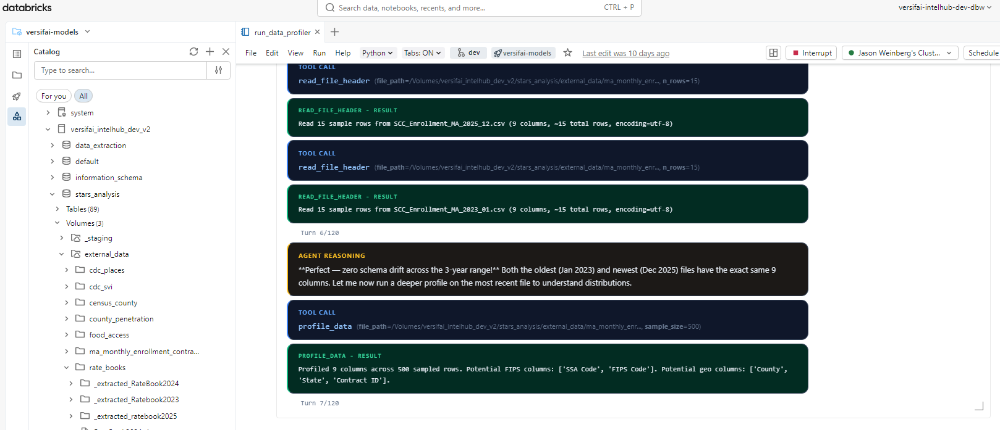

Getting Started¶
Installation¶
From PyPI¶
# Install with all runtime dependencies
pip install versifai
# With development tools (ruff, mypy, pytest, pre-commit)
pip install "versifai[dev]"
From Source (development)¶
git clone https://github.com/jweinberg-a2a/versifai-data-agents.git
cd versifai-data-agents
python -m venv .venv
source .venv/bin/activate
pip install -e ".[dev]"
Set Your LLM API Key¶
# Anthropic (default)
export ANTHROPIC_API_KEY="sk-ant-..."
# Or OpenAI
export OPENAI_API_KEY="sk-..."
Quick Start¶
1. Run a Data Engineering Agent¶
Agents run inside Databricks notebooks. You write a config, create the agent, and call .run() -the agent handles the rest through its ReAct loop:
from versifai.data_agents import DataEngineerAgent, ProjectConfig
cfg = ProjectConfig(
name="Sales Pipeline",
catalog="analytics",
schema="sales",
volume_path="/Volumes/analytics/sales/raw_data",
)
agent = DataEngineerAgent(cfg=cfg, dbutils=dbutils)
result = agent.run()
print(f"Processed {result['sources_completed']} sources")
Here's what this looks like running in a Databricks notebook -the agent autonomously profiles files, reasons about schema drift, and calls tools to load data into Unity Catalog:

2. Run a Data Science Agent¶
from versifai.science_agents import DataScientistAgent, ResearchConfig
cfg = ResearchConfig(
name="Customer Churn Analysis",
catalog="analytics",
schema="churn",
results_path="/tmp/results/churn",
themes=[...], # Define research themes
)
agent = DataScientistAgent(cfg=cfg, dbutils=dbutils)
result = agent.run()
3. Generate a Narrative Report¶
from versifai.story_agents import StoryTellerAgent, StorytellerConfig
cfg = StorytellerConfig(
name="Churn Analysis Report",
thesis="Customer churn is driven primarily by...",
research_results_path="/tmp/results/churn",
narrative_output_path="/tmp/narrative/churn",
narrative_sections=[...], # Define report sections
)
agent = StoryTellerAgent(cfg=cfg, dbutils=dbutils)
result = agent.run()
print(f"Wrote {result['sections_written']} sections")
Multi-Provider LLM Support¶
Versifai uses LiteLLM under the hood. Switch providers with a single parameter:
from versifai.core import LLMClient
# Anthropic Claude (default)
llm = LLMClient(model="claude-sonnet-4-6")
# OpenAI GPT-4o
llm = LLMClient(model="gpt-4o")
# Azure OpenAI
llm = LLMClient(
model="azure/gpt-4o",
api_base="https://my-endpoint.openai.azure.com",
)
# Google Gemini
llm = LLMClient(model="gemini/gemini-1.5-pro")
# Databricks-hosted Claude
llm = LLMClient(model="databricks/databricks-claude-sonnet-4-6")
Configuring via Agent Config (Recommended)¶
Instead of overriding agent._llm after construction, use LLMConfig in your
config dataclass. This is the cleanest approach:
from versifai.core.config import LLMConfig
from versifai.data_agents.engineer.config import ProjectConfig
cfg = ProjectConfig(
name="My Project",
catalog="my_catalog",
schema="my_schema",
volume_path="/Volumes/my_catalog/my_schema/raw_data",
llm=LLMConfig(model="databricks/databricks-claude-sonnet-4-6"),
)
agent = DataEngineerAgent(cfg=cfg, dbutils=dbutils)
All three agent configs (ProjectConfig, ResearchConfig, StorytellerConfig)
accept an llm field. When omitted, it defaults to claude-sonnet-4-6.
Databricks Environment Variables¶
When using Databricks-hosted models, set these environment variables:
| Variable | Purpose |
|---|---|
DATABRICKS_API_KEY |
Databricks API key for model serving |
DATABRICKS_API_BASE |
Databricks serving endpoint URL |
Smart Resume¶
All agents support resuming from interruption:
# First run -gets interrupted at source 3 of 10
agent = DataEngineerAgent(cfg=cfg, dbutils=dbutils)
agent.run() # Ctrl+C after source 3
# Re-run -automatically picks up from source 4
agent = DataEngineerAgent(cfg=cfg, dbutils=dbutils)
agent.run() # Skips sources 1-3, continues from 4
Running Specific Sections¶
Both science and story agents support targeted re-runs:
# Re-run only themes 0 and 3
scientist = DataScientistAgent(cfg=cfg, dbutils=dbutils)
scientist.run_themes(themes=[0, 3])
# Re-run only sections 1 and 2 of the narrative
storyteller = StoryTellerAgent(cfg=cfg, dbutils=dbutils)
storyteller.run_sections(sections=[1, 2])
Editorial Review (Human-in-the-Loop)¶
The storyteller agent has a dedicated editor mode:
agent = StoryTellerAgent(cfg=cfg, dbutils=dbutils)
# Guided review
agent.run_editor(
instructions="Simplify the methodology section for a policymaker audience."
)
# Open-ended review
agent.run_editor()
Complete Workflow Example¶
from versifai.data_agents import DataEngineerAgent
from versifai.science_agents import DataScientistAgent
from versifai.story_agents import StoryTellerAgent
# Step 1: Engineer ingests raw data
engineer = DataEngineerAgent(cfg=engineer_cfg, dbutils=dbutils)
engineer.run()
# Step 2: Scientist analyzes the data
scientist = DataScientistAgent(cfg=science_cfg, dbutils=dbutils)
scientist.run()
# Step 3: Storyteller writes the report
storyteller = StoryTellerAgent(cfg=story_cfg, dbutils=dbutils)
storyteller.run()
For a complete, runnable example using real World Bank data, see the
World Development Tutorial or browse the source in
examples/world_development/.
Configuration¶
CatalogConfig (shared)¶
All agents that interact with Databricks Unity Catalog use CatalogConfig:
from versifai.core import CatalogConfig
catalog = CatalogConfig(
catalog="my_catalog",
schema="my_schema",
volume_path="/Volumes/my_catalog/my_schema/data",
staging_path="/Volumes/my_catalog/my_schema/staging",
)
AgentSettings (shared)¶
Tune agent behavior globally:
from versifai.core import AgentSettings
settings = AgentSettings(
max_agent_turns=200, # Max ReAct iterations per run
max_turns_per_source=120, # Max turns per data source
max_acceptance_iterations=3, # Validation retry limit
sample_rows=10, # Rows shown in profiling previews
)
Environment Variables¶
| Variable | Purpose | Required |
|---|---|---|
ANTHROPIC_API_KEY |
Anthropic Claude API key | If using Claude |
OPENAI_API_KEY |
OpenAI API key | If using GPT models |
DATABRICKS_HOST |
Databricks workspace URL | For catalog operations |
DATABRICKS_TOKEN |
Databricks PAT | For catalog operations |